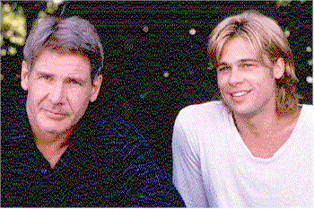

Contents | Features | Reviews | News | Archives | Store |
 |
|
| Movie Credits | Buy It! |
The Devil's Own
Review by Eddie Cockrell
|  | Directed by Alan J. Pakula Starring
Harrison Ford, Brad Pitt, Screenplay by
David Aaron Cohen, |
Ordinarily, collectors must wait to get extra footage from a Hollywood film (outtakes, trimmed scenes and the like) on laserdisc, or, in rare cases, videocassette, release. By virtue of its much-documented difficulties before, during and after production, however, The Devil's Own offers the alert viewer some unseen footage in, of all places, the various theatrical and broadcast trailers that can still be seen in some theaters and sporadically on network television. Remarkably, the film, which stars Brad Pitt and Harrison Ford in a moderately absorbing thriller about an unrepentent but increasingly troubled Irish Republican Army soldier and the honest New York City cop who unwittingly offers him refuge which turns out to be far from safe, shows little or no signs of the artistic and economic catastrophes which peppered the production (including a different ending, shot not long ago). Absorbing if not particularly exciting, The Devil's Own is a good evening's slick entertainment that offers in its jaded history an intriguing armchair tale of how Hollywood operates today.
Opening with a bloody battle in urban Northern Ireland that could be from the evening news, the action moves quickly to New York City, where the only survivor of the skirmish, brooding IRA footsoldier Frankie "The Angel" McGuire (Pitt), is met at the airport by local judge Peter Fitzsimmons (George Hearn), who is sympathetic to the cause. Fitzsimmons has arranged for McGuire, now operating under the nom de paix "Rory Devaney," to room with Tom O'Meara (Ford) and his all-girl brood (wife Margaret Colin and three daughters).
Financed by the judge, Pitt's in town to buy a clutch of Stinger missiles from shady entrepreneur Billy Burke (Treat Williams) and sail back to Ireland, where he presumably will use them on the British. As he negotiates, O'Meara has problems of his own with partner Edwin Diaz as the overzealous officer shoots a miscreant in the back and begs his cohort to cover for him. The inflexible O'Meara refuses, and the episode ends in tragedy.
Meanwhile, "Rory" hasn't done well with Burke, and three goons show up at O'Meara's house and scare the wits out of his wife. Deciding to take a retirement package at about the same time he discovers the subterfuge, O'Meara tracks down "Devaney" and forces a subdued but cataclysmic showdown.
As usual, everybody concerned with the film has been all -- well, mostly -- smiles on the morning talk shows and print interviews. It appears that, to simplify the complicated process of Hollywood development, The Devil's Own has been around awhile and was acquired by Pitt, who then passed it on to Ford. Once the latter was onboard, the project moved forward with great speed -- even as, according to the published rumors, Ford leaned on the screenwriters to expand and develop the role of O'Meara (as it is, he takes top billing). Everyone agrees that production was begun without a finished script, and that friction arose from this. For awhile, the troubled shoot was covered by the tabloid press, which even published photos of a staged fistfight between the two stars on the streets of New York.
This tension parallels the mood of the film. With, essentially, two good guys, traditional action elements would seem forced and are mostly absent until O'Meara discovers "Rory"'s missile money. At this point Ford starts to look, well, Fordish, making pronouncements along the lines of "I told you, I warned you" and "They're not going to bring him in, they're going to kill him." His taciturn resolution turns nasty when his house is invaded, evoking inevitable parallels with Tom Clancy's Jack Ryan character and innumerable other "Touch-My-Secure-Life-and-You-Die" scenarios. Thus the multi-faceted issue of a messy war in Northern Ireland that nobody seems to want but is passed down to each new generation and larger moral questions, more vividly addressed in cinematographer-turned-director Thaddeus O'Sullivan's Nothing Personal (now appearing on the North American film festival circuit in Philadelphia and elsewhere), is reduced to tough-guy movie heroics, as if Ford could hop in the Millenium Falcon and kick it into lightspeed (and speaking of Star Wars, Ford's aged well, molding the devil-may-care insouciance of Han Solo into a can-do persona of thoughtful gravity, if predictable action).
While the relatively subdued nature of the The Devil's Own -- few flaming explosions, no post- post- post-modern irony, no flamboyant, eccentric villain -- might at first blush seem to be a breath of fresh air in Hollywood's waning but still annoying testosterone-drenched "event" movie atmosphere, the studio's fear is that even with the cross-generational one-two punch of Pitt and Ford (or Ford and Pitt, if you want to keep the agents happy) the film doesn't deliver enough action goods to sustain boffo box office. Ironically, the film works better in its brooding state than if Ford's heroics had been further fleshed out.
Remarkably, the finished film also plays relatively seamlessly to the casual observer, due, no doubt, in large part to the calm even hand of director Alan J. Pakula (Klute, All the President's Men) and his superb pacing skills. Fortunately, the two leads aren't really required to like each other, as "Devaney" is established early on as devious and O'Meara's paternal feelings for "Rory" as the son he never had are sketched in just enough to provide motivation for the climactic episodes -- and both characters are pretty stoic to begin with. Yet the missing footage, including the aforementioned fistfight, a wider angle of Pitt taking care of business with Burke and shots indicating more details of "Rory"'s brief love affair with supportive Irish lass Megan Doherty (Natascha McElhone), hints at what the project apparently started life as: a character study of an idealistic young man and the flickers of conscience he sees while rolling the dice on a very big deal that serves only to repeat the cycle of violence that the conflict has become. In this perhaps deeper context, that recently reshot coda reinforces an earlier line in which "Rory" not only provides the essential theme of The Devil's Own but (unwittingly?) warns an audience expecting Lethal Weapon 412: "it's not an American story, it's an Irish one." Quite a novel idea for a big American action movie, that.
Other than the sloganeering, about all that's left of the movie's original depth are two emotional high points of the film: in the first, the camera lingers on a passive but obviously conflicted Pitt as a priest intones the rites of Catholic confirmation for one of O'Meara's daughters, and in the second Pitt gives a quietly impassioned speech (in the authentic-sounding accent he maintains admirably throughout the film) about a government that's failed all the factions it has tried to mollify. Given the vagaries of duelling egos, Hollywood style, this is plenty for which to give thanks. Still, like the recently-released director's cut of Das Boot, which restores more than an hour of footage excised from the release print, should the producers of The Devil's Own see the value to film history of charting its labrynthine shoot (and restoring a larger percentage of the film's estimated $90 million budget to the screen -- any sized screen), the bells-and-whistles laserdisc oughtta be a doozy.
Copyright © 1999 by Nitrate Productions, Inc. All Rights Reserved.